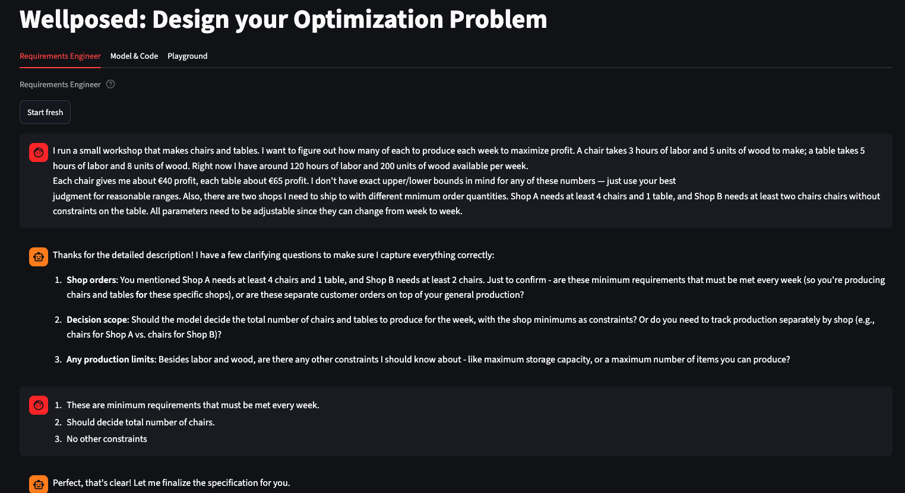
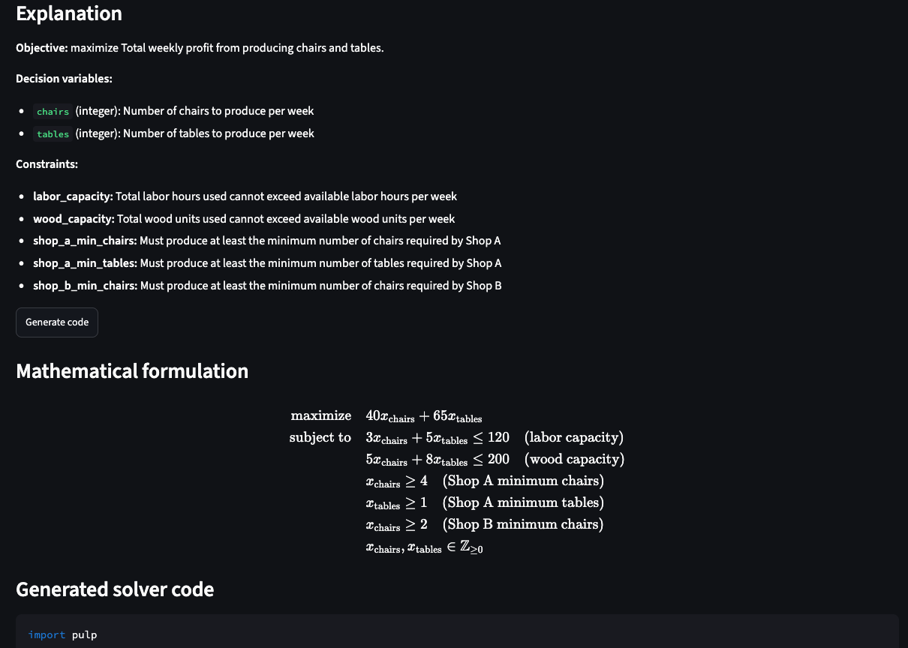
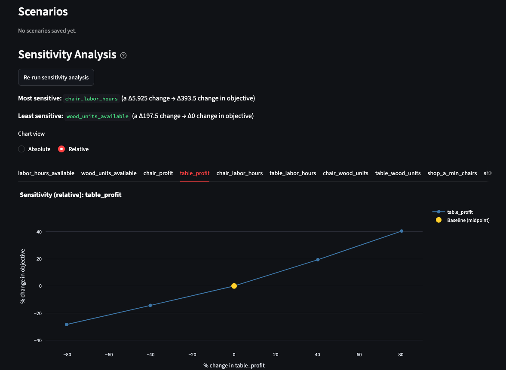

Anyone can formulate an optimization problem. But would you notice if it were wrong?
Optimization projects stall at the start, not at the finish. Agreeing on what the problem actually is — that is where the weeks go.
- Business names the goal
- Specialist formalises it
- Model gets built
- “That is not what I meant.”
back to the start — days to weeks later, effort already spent
The costly failure is not an infeasible model. It is a feasible but wrong one — plausible enough that nobody questions it until the decisions are already made.
Describe it in your words. See what it decides. Correct it the same hour.
Two AI agents sit between business and model: one interviews you until the problem is precise, the other implements it.
Requirements agent
Define
You describe the problem the way you would to a colleague. The agent asks focused follow-up questions until your goal, your levers and your rules are unambiguous — then writes them down as a formal specification. No notation required from you.

screenshots/1-requirements-chat.png
Developer agent
Inspect
The specification and the working solver code are shown back to you side by side. You can read what was assumed, hand the code to your own engineers, or download it. Nothing sits behind a black box you are asked to trust.

screenshots/2-model-and-code.png
Playground
Correct
Move a constraint and watch the objective respond. Sensitivity curves show how each parameter drives the result, and scenarios can be saved side by side. This is where a wrong assumption stops being invisible — and you fix it by talking to the agent, not by re-scoping the project.

screenshots/3-playground.png
Where this goes
Every engagement leaves behind a reviewed, reusable problem pattern.
-
Acceleratoryou are here
Specialist stays in the loop. The requirements phase drops from weeks to hours.
-
Pattern library
Reviewed templates per problem class — routing, rostering, blending, planning.
-
Guided authoring
Automated checks catch the errors a reviewer would, before a model is trusted.
-
Operational use
Live data, scheduled runs, models in daily decisions.
What this does not replace: integration into your systems, data pipelines and productionising the model. That stays engineering work — this shortens the phase before it, not the phase after.